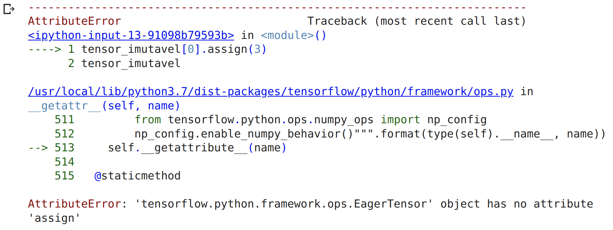
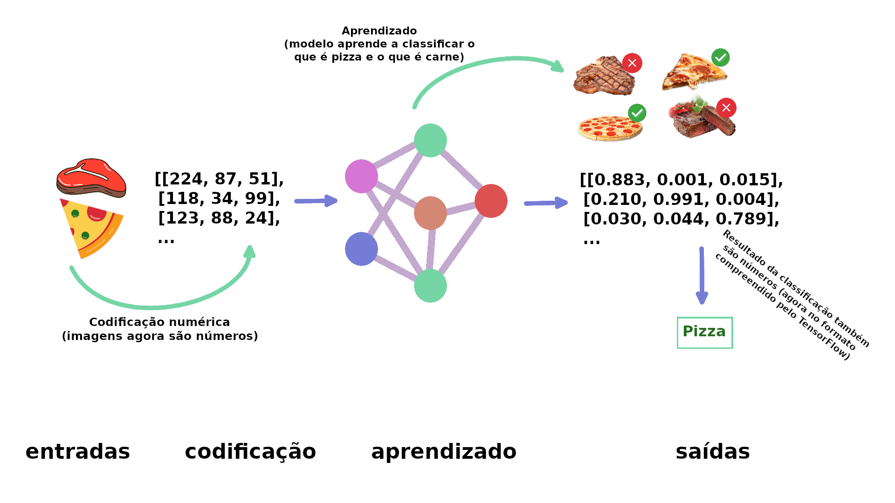

Introdução ao TensorFlow
TensorFlow é uma biblioteca de Machine Learning open-source para pré-processamento de dados, modelagem de dados e criação de modelos. Em vez de criar modelos de ML do zero, podemos utilizar TensorFlow que contém muitas funções de ML (principalmente as mais utilizadas). Ok, TensorFlow é vasto, mas o foco principal é simples: transformar dados em números que são chamados de (tensors) e construir algoritmos de ML para encontrar padrões neles.
Tensors
Os tensors são como matrizes NumPy. Daqui pra frente pense em um tensor como uma representação numérica multidimensional (n-dimensional, onde n pode ser qualquer número) de algo. Esse algo pode ser quase qualquer coisa que possamos imaginar:
- números (tensors representando o preço de carros).
- imagens (tensors representando os pixels de uma foto).
- texto (tensors representando palavras).
Ou alguma outra forma de informação (dados) que você deseja representar como números.
A principal diferença entre tensors e matrizes NumPy é que os tensors podem ser utilizados em GPUs (unidades de processamento gráfico, placas de vídeo) e TPUs (unidades de processamento de tensor). O benefício disso é poder executar tarefas computacionais mais rápidas, ou seja, para encontrar padrões em representações numéricas nos dados de forma mais rápida.
Vamos começar nossa jornada, a primeira coisa que faremos é importar o TensorFlow, o alias mais comum utilizado é o tf:
import tensorflow as tf
print(tf.__version__)
2.8.0
Criando Tensors com tf.constant()
No geral, normalmente não criaremos tensors por conta própria, pois o TensorFlow possui módulos integrados capazes de ler nossas fontes de dados e convertê-las automaticamente em tensors. Apenas para exemplificar nesse momento em que estamos nos familiarizando, criaremos tensors e veremos como manipulá-los. Começando por tf.constant():
scalar = tf.constant(5)
scalar
<tf.Tensor: shape=(), dtype=int32, numpy=5>
Um
scalaré conhecido como um tensor derank0 por não ter dimensões (é apenas um número). No momento não precisamos saber muito sobre os diferentesranksde tensors, veremos mais detalhes sobre isso mais na frente. O importante agora é saber que os tensors podem ter um intervalo ilimitado de dimensões (a quantidade exata, vai depender dos dados que vamos representar).
scalar.ndim
0
vetor = tf.constant([10, 10])
vetor
<tf.Tensor: shape=(2,), dtype=int32, numpy=array([10, 10], dtype=int32)>
vetor.ndim
1
matriz = tf.constant([[10, 5],
[5, 10]])
matriz
<tf.Tensor: shape=(2, 2), dtype=int32, numpy=
array([[10, 5],
[ 5, 10]], dtype=int32)>
matriz.ndim
2
Por padrão o TensorFlow cria tensors utilizando int32 como tipo de dados ou float32. Isso também é conhecido como precisão de 32 bits (quanto maior o número, mais preciso ele é).
tensor = tf.constant([[[1, 2, 3],
[4, 5, 6]],
[[7, 8, 9],
[10, 11, 12]],
[[13, 14, 15],
[16, 17, 18]]])
tensor
<tf.Tensor: shape=(3, 2, 3), dtype=int32, numpy=
array([[[ 1, 2, 3],
[ 4, 5, 6]],
[[ 7, 8, 9],
[10, 11, 12]],
[[13, 14, 15],
[16, 17, 18]]], dtype=int32)>
tensor.ndim
3
Esse é um exemplo de um tensor rank 3 (possui 3 dimensões), como dito antes, um tensor pode ter uma quantidade ilimitada de dimensões. Imagine que você quer transformar uma série de imagens em tensors, no formato (223,223, 3, 32), onde:
223, 223 são as primeiras 2 dimensões, altura e largura das imagens em pixels. 3 é o número de canais de cores da imagem (vermelho, verde e azul) e 32 é o tamanho do lote (número de imagens que uma rede neural vê). Todas as variáveis criadas acima, são na verdade tensors, na literatura podemos encontrar referências com nomes diferentes:
- scalar: um único número
- vetor: um número com direção (ex: velocidade de um carro)
- matriz: uma matriz bidimensional numérica
- tensor: uma matriz n-dimensional numérica (onde
npode ser qualquer número, logo um tensor com dimensão0é um scalar, um tensor com 1 dimensão é um vetor).
MEMO: inserir uma imagem aqui com ex. de álgebra visual comparando as referências para um tensor, algo parecido com: https://www.mathsisfun.com/algebra/scalar-vector-matrix.html
Criando Tensors com tf.Variable()
Outra opção para criar tensors é utilizando tf.Variable(). A diferença é que tf.constant() cria tensors imutáveis (não podem ser alterados, só podem ser utilizados para criar um novo tensor) enquanto tf.Variable() cria tensors mutáveis (que podem ser alterados).
tensor_mutavel = tf.Variable([10, 5])
tensor_imutavel = tf.constant([10, 5])
tensor_mutavel, tensor_imutavel
(<tf.Variable 'Variable:0' shape=(2,) dtype=int32, numpy=array([10, 5], dtype=int32)>,
<tf.Tensor: shape=(2,), dtype=int32, numpy=array([10, 5], dtype=int32)>)
Por exemplo, podemos alterar os valores do tensor mutável por meio da função assign():
tensor_mutavel[0].assign(3)
tensor_mutavel
Os valores forma alterados de [10, 5] para [3, 5]. Se tentarmos a mesma alteração no tensor imutável, teremos uma mensagem de erro:
tensor_imutavel[0].assign(3)
tensor_imutavel

A escolha de qual utilizar, tf.Variable() ou tf.constant() vai depender do tipo de solução que o seu problema exige. Na maioria das vezes, o TensorFlow escolherá automaticamente para você (ao carregar dados).
Criando Tensors aleatórios
Tensors aleatórios possuem algum tamanho arbitrário com números aleatórios. Isso é bastante utilizado em redes neurais para inicializar as configurações (pesos padrões) que estão tentando aprender nos dados.
O processo de aprendizado de uma rede neural geralmente envolve o uso de uma matriz aleatória n-dimensionale refiná-los até que representem algum tipo de padrão (uma forma compacta de representar os dados originais).
Como uma rede neural aprende ?

No exemplo acima, de forma simplificada a primeira etapa é converter as imagens em números, os números agora são tensors (no TensorFlow), então a rede neural busca por padrões que identifiquem as imagens, para no final classificar se é uma coisa ou outra.Em detalhes o aprendizado começa com padrões aleatórios e depois passa para exemplos demonstrativos de dados, ao mesmo tempo em que tenta atualizar seus padrões aleatórios para representar os exemplos (pizza ou carne).
Podemos criar tensors, aleatórios utilizando a classe tf.random.Generator:
random_1 = tf.random.Generator.from_seed(42)
random_1 = random_1.normal(shape=(3, 2))
random_1
<tf.Tensor: shape=(3, 2), dtype=float32, numpy=
array([[-0.7565803 , -0.06854702],
[ 0.07595026, -1.2573844 ],
[-0.23193763, -1.8107855 ]], dtype=float32)>
O tensor aleatório criado, na verdade é pseudoaleatório. Se criarmos outro tensor aleatório e definirmos o mesmo valor de seed teremos os mesmos números aleatórios (lembre do NumPy, é bem semelhante np.random.seed(42)):
random_2 = tf.random.Generator.from_seed(42)
random_2 = random_2.normal(shape=(3, 2))
random_2
<tf.Tensor: shape=(3, 2), dtype=float32, numpy=
array([[-0.7565803 , -0.06854702],
[ 0.07595026, -1.2573844 ],
[-0.23193763, -1.8107855 ]], dtype=float32)>
Comparando:
random_1 == random_2
<tf.Tensor: shape=(3, 2), dtype=bool, numpy=
array([[ True, True],
[ True, True],
[ True, True]])>
E se trocarmos o valor do seed ?
random_3 = tf.random.Generator.from_seed(11)
random_3 = random_3.normal(shape=(3, 2))
random_3
<tf.Tensor: shape=(3, 2), dtype=float32, numpy=
array([[ 0.27305737, -0.29925638],
[-0.3652325 , 0.61883307],
[-1.0130816 , 0.28291714]], dtype=float32)>
random_1 == random_3
<tf.Tensor: shape=(3, 2), dtype=bool, numpy=
array([[False, False],
[False, False],
[False, False]])>
Ok, e se você quiser embaralhar a ordem de um tensor ? Digamos que você esteja em um projeto com 20.000 imagens de pizzas e carnes e as primeiras 15.000 imagens são de pizzas e as próximas 5.000 são de carnes. Essa distribuição pode afetar a forma como uma rede neural aprende, ou seja, pode ser induzida a aprender pela ordem dos dados, em vez disso, pode ser uma boa estratégia embaralhar os dados.
nao_embaralhado = tf.constant([[10, 7],
[3, 4],
[2, 5]])
tf.random.shuffle(nao_embaralhado)
<tf.Tensor: shape=(3, 2), dtype=int32, numpy=
array([[10, 7],
[ 2, 5],
[ 3, 4]], dtype=int32)>
Agora vamos embaralhar:
tf.random.shuffle(nao_embaralhado, seed=42)
<tf.Tensor: shape=(3, 2), dtype=int32, numpy=
array([[ 2, 5],
[ 3, 4],
[10, 7]], dtype=int32)>
Outras formas de criar Tensors
Assim como no NumPy, TensorFlow disponibiliza funções para gerar arrays de 1 e 0 (nesse caso tensors). Embora raramente você utilize isso:
tf.ones(shape=(3, 2))
<tf.Tensor: shape=(3, 2), dtype=float32, numpy=
array([[1., 1.],
[1., 1.],
[1., 1.]], dtype=float32)>
tf.zeros(shape=(3, 2))
<tf.Tensor: shape=(3, 2), dtype=float32, numpy=
array([[0., 0.],
[0., 0.],
[0., 0.]], dtype=float32)>
Também podemos transformar matrizes NumPy em tensors, lembre-se que a principal diferença entre matrizes NumPy e tensors é que o segundo pode ser ser executado em GPUs.
import numpy as np
numpy_A = np.arange(1, 25, dtype=np.int32)
A = tf.constant(numpy_A,
shape=[2, 4, 3])
A
<tf.Tensor: shape=(2, 4, 3), dtype=int32, numpy=
array([[[ 1, 2, 3],
[ 4, 5, 6],
[ 7, 8, 9],
[10, 11, 12]],
[[13, 14, 15],
[16, 17, 18],
[19, 20, 21],
[22, 23, 24]]], dtype=int32)>
Listando informações de Tensors
Em algum momento vamos precisar obter informações diferentes sobre os tensors, as principais formas:
- Shape número de elementos de cada dimensão de um tensor.
- Rank número de dimensões de um tensor.
- Axis uma dimensão particular de um tensor.
- Size número total de elementos no tensor.
Vamos criar um novo tensor com zeros e obter todas essas informações:
rank_tensor_4 = tf.zeros([2, 3, 4, 5])
rank_tensor_4
<tf.Tensor: shape=(2, 3, 4, 5), dtype=float32, numpy=
array([[[[0., 0., 0., 0., 0.],
[0., 0., 0., 0., 0.],
[0., 0., 0., 0., 0.],
[0., 0., 0., 0., 0.]],
[[0., 0., 0., 0., 0.],
[0., 0., 0., 0., 0.],
[0., 0., 0., 0., 0.],
[0., 0., 0., 0., 0.]],
[[0., 0., 0., 0., 0.],
[0., 0., 0., 0., 0.],
[0., 0., 0., 0., 0.],
[0., 0., 0., 0., 0.]]],
[[[0., 0., 0., 0., 0.],
[0., 0., 0., 0., 0.],
[0., 0., 0., 0., 0.],
[0., 0., 0., 0., 0.]],
[[0., 0., 0., 0., 0.],
[0., 0., 0., 0., 0.],
[0., 0., 0., 0., 0.],
[0., 0., 0., 0., 0.]],
[[0., 0., 0., 0., 0.],
[0., 0., 0., 0., 0.],
[0., 0., 0., 0., 0.],
[0., 0., 0., 0., 0.]]]], dtype=float32)>
Exemplificando as principais funções para coletar informações sobre o tensor que criamos:
print("Tipo de dados de cada elemento:", rank_tensor_4.dtype)
print("Número de dimensões:", rank_tensor_4.ndim)
print("Shape (forma) do tensor:", rank_tensor_4.shape)
print("Elementos no eixo 0 do tensor:", rank_tensor_4.shape[0])
print("Elementos ao longo do último eixo do tensor:", rank_tensor_4.shape[-1])
print("Número total de elementos:", tf.size(rank_tensor_4).numpy())
Tipo de dados de cada elemento: <dtype: 'float32'>
Número de dimensões: 4
Shape (forma) do tensor: (2, 3, 4, 5)
Elementos no eixo 0 do tensor: 2
Elementos ao longo do último eixo do tensor: 5
Número total de elementos: 120
Manipulando Tensors
Para encontrar padrões nos dados (tensors) é necessário manipulá-los. Ao criar modelos no TensorFlow, grande parte da descoberta de padrões é feita automaticamente, veremos apenas algumas das instruções que ocorrem por baixo dos panos.
Operações básicas
Podemos executar várias das operações matemáticas básicas diretamente em um tensor utilizando operadores Python +, -, *:
tensor = tf.constant([[7, 3], [4, 5]])
tensor
<tf.Tensor: shape=(2, 2), dtype=int32, numpy=
array([[7, 3],
[4, 5]], dtype=int32)>
tensor + 10
<tf.Tensor: shape=(2, 2), dtype=int32, numpy=
array([[17, 13],
[14, 15]], dtype=int32)>
Agora com os outros operadores:
tensor * 10
<tf.Tensor: shape=(2, 2), dtype=int32, numpy=
array([[70, 30],
[40, 50]], dtype=int32)>
tensor - 10
<tf.Tensor: shape=(2, 2), dtype=int32, numpy=
array([[-3, -7],
[-6, -5]], dtype=int32)>
Outra forma seria utilizando uma função do TensorFlow:
# equivalente ao operador "*"
tf.multiply(tensor, 10)
<tf.Tensor: shape=(2, 2), dtype=int32, numpy=
array([[70, 30],
[40, 50]], dtype=int32)>
WIP
Multiplicação de Matriz
Alterando o tipo de dados de um Tensor
Tensors e NumPy
Acessando GPUs